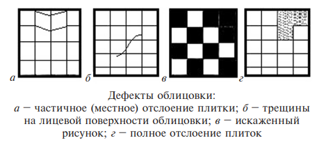

-

8(0152)31-25-61
-

kst@ggkst.by
-

http://ggkst.by
8(0152)31-25-61
kst@ggkst.by
http://ggkst.by
Дефекты облицовки и способы их устранения
Сразу по окончании облицовочных работ и в процессе эксплуатации облицовочного покрытия возможно появление различных дефектов. Условно все дефекты облицовки можно разделить на две группы: явные дефекты, к которым относят трещины, сколы, вздутия, не выводимые загрязнения и т. п., и скрытые дефекты, такие как отслоения плиток, плитки с раствором или без него.
Явные дефекты заметны невооруженным глазом. Скрытые дефекты обнаруживают простукиванием облицовочного покрытия. Любое изменение звука свидетельствует о наличии дефекта.
Способ устранения дефекта зависит в первую очередь от типа облицовочного покрытия. Поврежденные плитки, независимо от материала, удаляют, а на их место кладут новые.
Рассмотрим наиболее распространенные дефекты облицовки.
Отслоение плиток от растворной прослойки на стене происходит по нескольким причинам:
- использование раствора с высоким содержанием вяжущего вещества;
- чрезмерная усадка раствора;
- плохое сцепление плиток с раствором из-за неочищенной тыльной поверхности плиток или основания
- перенасыщенная цементным молоком тыльная поверхность плиток;
- резкое увеличение температуры (например, в местах расположения отопительных приборов).
Отслоившуюся плитку необходимо осторожно, чтобы не повредить саму плитку и грани смежных с ней плиток, удалить и приклеить заново. Если растворная прослойка на месте отслоившихся плиток прочная и неповрежденная, то сбивать ее не следует, так как это может привести к отслоению соседних плиток.
Необходимо приклеить отслоившуюся плитку на имеющийся раствор, используя мастики ПЦ или КПЦ. Следует следить за тем, чтобы плитка не возвышалась над общим уровнем облицовки. Пустоты в растворной прослойке необходимо заделать.
Сплошные протяженные трещины (как по швам, так и через плитку) свидетельствуют об общестроительных дефектах. Самая распространенная причина сквозных трещин – неравномерная осадка здания. Треснувшие и отслоившиеся плитки, а также растворную прослойку необходимо удалить и произвести облицовочные работы заново.
Искажение рисунка (укладка дефектных плиток) возникает в результате некачественного выполнения облицовки.
Отслоение настенной плитки вместе с растворной прослойкой возникает по причине некачественного раствора. Отвалившуюся плитку очищают от раствора и заново укладывают на место, соблюдая технологию облицовочных работ.

Вспучивание всего облицовочного покрытия происходит по причине зыбкости облицованной поверхности. Для устранения данного дефекта поврежденную облицовку необходимо разобрать, а основанию придать необходимую прочность, как правило, путем устройства цементной стяжки. При отсутствии такой возможности облицовку из керамических плиток следует полностью удалить и заменить ее менее тяжелым отделочным материалом.
При отслаивании или разрушении плитки, уложенной на поверхности печи или камина, необходимо удалить поврежденную плитку и растворную прослойку, очистить поверхность печи и установить плитку заново. При этом рекомендуется использовать особый соленый раствор, приготовленный из следующих компонентов: 1 ведро портландцемента марки 400, 3 ведра мелкозернистого песка и 1 кг поваренной соли.
При повреждении межплиточных швов остатки старой затирки необходимо удалить, хотя бы на половину глубины шва, используя тонкое зубило или прочный металлический шпатель. Делать это надо осторожно, стараясь не повредить облицовку. Оставшуюся в швах затирку увлажняют, дают влаге немного впитаться, а затем швы по обычной схеме заполняют свежей затирочной смесью.
На поверхности облицовочных плиток могут быть щербинки, отбитые углы, плешины, мушки, пузыри и другие дефекты. Это обусловлено применением плиток без предварительной сортировки, отсутствием лабораторного контроля. Поврежденные плитки необходимо выбить и заменить новыми.
Неодинаковая ширина швов на облицованной поверхности вызвана применением плиток без сортировки их по размерам либо небрежностью в работе плиточника, осуществляющего облицовку без применения скоб и шаблонов. Поверхности с неровными швами необходимо переделать до твердения раствора, рассортировать плитки по размерам. При массовом несоответствии размеров плитки бракуют и возвращают поставщику. Для устройства ровного уширенного шва применяют металлические скобы и шаблоны.
Уступы между смежными плитками (плитка выходит за поверхность смежной плитки) вызывает одновременное выполнение облицовки и грунтовки, так как при этом раствор разной толщины дает различную усадку и «тянет» за со бой плитки. Поверхности с таки ми дефектами должны быть переделаны. Категорически запрещается начинать облицовку без проверки поверхности и выравнивания ее штукатурным наметом.
Небрежное примыкание облицовки к трубопроводам, выключателям, розеткам и т. д. может быть вызвано следующими причинами: прокладка трубопроводов после облицовки; отсутствие необходимого инструмента для фасонного выреза плиток (специального молоточка, сверла, приспособлений для сверления), недостаток навыков работы у плиточников. Поврежденные места нужно облицевать заново. Не следует начинать облицовку до прокладки трубопроводов и установки электрокоробок.
Обнаруженные дефекты облицовки устраняют. Участки облицовки около дефектных мест проверяют простукиванием. Обнаруженные при этом отслоившиеся плитки осторожно снимают, чтобы не повредить и использовать повторно.
Отслоившиеся плитки концом плиточной лопатки или стальным шпателем осторожно приподнимают и извлекают, стараясь не повредить кромок и не уронить. Затем очищают от раствора для повторного использования.
Дефектные плитки (с трещинами, отбитыми гранями и др.) удаляют по частям с помощью скарпеля или зубила. Удаляемую плитку выбивают небольшими кусочками от середины к краям, чтобы не повредить грани смежных плиток. Если на месте отставших или поврежденных плиток сохранилась прочная растворная прослойка, то ее не удаляют, а очищают, чтобы не допустить отслаивания соседних участков облицовки.
При наклеивании плиток на слой мастики контролируют, чтобы их лицевая поверхность не выступала из плоскости облицовки. Отслоившиеся плитки при небольшом объеме работ устанавливают на густотертых белилах, светлых эмалевых красках или на синтетических мастиках ПЦ и КЦП. Пустоты в растворной прослойке предварительно заделывают раствором, чтобы наклеиваемые плитки прилегали всей тыльной поверхностью.
Поврежденные места облицовки, уложенной на глинобитумной мастике, исправляют. Для этого пламенем паяльной лампы плитку прогревают в течение 0,5 мин. Затем концом шпателя или стамески плитку отделяют от прослойки. Для повторного использования снятых плиток остатки мастики со стены удаляют ветошью, смоченной в керосине или водном растворе уксуса (в соотношении 100–125 г уксуса : 0,5 л воды).
Образование скола возникает из-за механического повреждения. Сначала необходимо восстановить форму плитки и выровнять угол (если скол произошел там). Для этого применяют шпатлевки, которые быстро сохнут. Обезжиривают поверхность растворителем, затем наносят шпатлевку и зачищают наждачной бумагой до получения ровного угла и сторон. Сверху равномерно наносят эмаль: двухкомпонентный полимерный материал в виде суспензии пигментов и наполнителей в растворе эпоксидной смолы в смеси органических растворителей, в которую добавляют отвердители. Два компонента эмали перед применением смешивают, а затем наносят небольшой кисточкой в место скола. Сохнет такой состав примерно 6 ч.
Отремонтированные участки облицовки не должны отличаться от первоначальной облицовки по цвету, форме и размеру плиток, по ширине и направлению горизонтальных и вертикальных швов. Поверхность отремонтированного участка должна находиться в одной плоскости с поверхностью ранее выполненной облицовки. Вновь уложенные плитки с расстояния 3 м не должны быть заметными и выделяться на фоне ранее выполненной облицовки.
Особенности выполнения облицовочных работ в зимний период